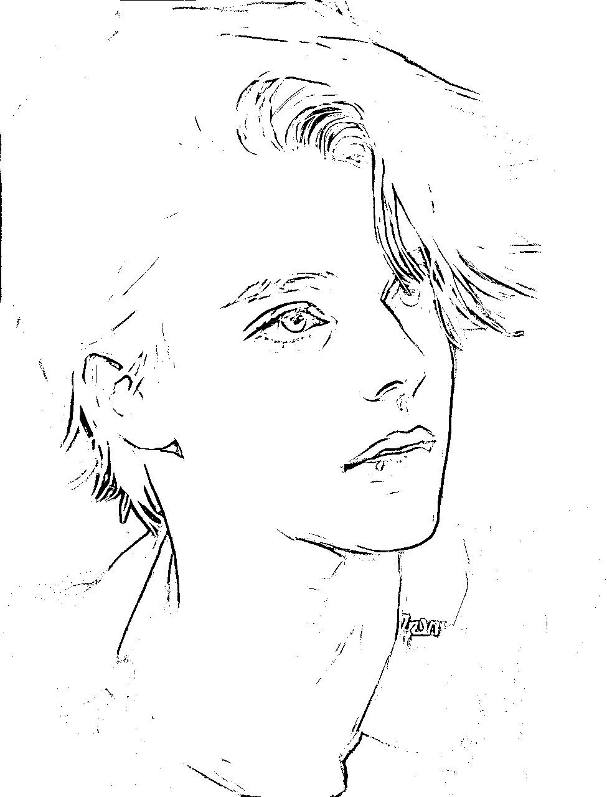

来源：https://onpzm80xtu.feishu.cn/docx/KfrYdaWSTobevfxC0NscSPzxnMe
大家好，我是饼公子，一个浪漫爱自由的人（自封的），希望能用AI绘画，画出心中所想，创造出属于自己的世界。同时我也是“智慧星球”的创始人之一，我们聚集在一起，就是为了创造梦想，创造梦境，所以我们也自称“造梦师”。
经过了这么一段时间的AI火爆和两次航海，大家对于AI绘画有了一定的了解。相信大家已经知道，要想画出一幅你想要的画面，核心内容还是“写好关键词”。
感谢@张子安 的邀请，让我来和大家分享一下让AI绘画，从随机出图到随心定制，将以“如何写好关键词”结合定制商单为例，聊一聊我的思路。
首先，我们要明白AI绘画是能将你脑海中的画面呈现出来的工具。
其次，我们要清楚我们每次要做出来的图，是有一定意义的，而不是随便玩玩的。
接下来我就带大家走进工具的使用方法，在这里我用到的工具是midjourney。
所谓随机，就是留下【空白】让AI去帮你填满，所谓随心，就是用【详细描述】补充画面。
随机，意味着控制量少，变量多。简单的讲，就是只写一个主体，对于主体的内容、环境、风格等不进行限制。就像是高考作文的注释一样——以【xxx】为主体，文体不限。
而随心就是将你脑海中想要的那个画面，对各方面都进行【描述】，或者是对你需要的AI绘画的出图方向进行限制。一样比喻成高考作文，这次是给你一个漫画，然后告诉你结合漫画内容，以【XXX】为题目，文体为议论文或记叙文。
AI绘画有时候会有明确的主题，有时候也没有明确的想法。在你没有明确的想法的时候，就可以尝试着更多的随机，然后根据生成的图片去添加内容和限制，一步步调教，让出来的画面走向随心。
每一个画面，都会表达一个主题。
基础的一个画面，常常包含了主体，客体，背景等，而它们都又有自己的细节，比如服装有T恤，衬衫等等；建筑有中式宫殿、西式教堂，摩天大楼等。
我们在做图之前，要先在脑海里思考一个大概的画面，写下来告诉AI你想要的是什么，比如：
写下你的【主体】，写下【主体的细节】，写下【背景】（如果有）
简单的说，就是你想控制什么，那么就先写下什么。当然并不是只有定式能才能出好看的图，只是有定式或者公式能提升你出好看的图的概率。
我自己的公式，依旧是简单的三段式：主体+环境+后缀 （有时也可省略）
主体讲的是画面中的主要部分，可以是动物、植物、人物、建筑、景物，幻想生物等。
环境讲的是画面中的背景，可以单纯的黑色背景，也可以是夕阳下、月光下、海边这样的具体的。
后缀其实很多时候并不是放在最后面，只是我这样描述会理解的简单一些，包括了画风限定词、艺术家、光影、视角等等。
简单的来个例子拆解一下，在midjourney公共频道随手截图，
把关键词拉出来看看
简单的分类一下，绿色划线的俯视图，视为后缀；红色划线的ipad，视为主体（可以看到生成的图中，ipad所占的比例）；蓝色划线的内容视为环境（次要主体、主体之外）。通过这样的分解，再结合画面来看，是不是简单一些了？
当我们能从简单的角度去理解一件事的时候，接着要做的就是将简单，变得不简单。
接下来，我将结合如何制作扇子，进行讲解。
扇子是引风用品，夏令必备之物。大家对扇子应该不陌生吧，毕竟谁家还没几把扇子呢？
中国传统扇文化有着深厚的文化底蕴，是文化的一个集成部分。它起初不是用来纳凉的，而是一种礼仪工具。渐渐地，从地位和权利的象征转变成为纳凉、娱乐、欣赏等生活用品和工艺品。
放两张用AI做的图片，一张是我认为是生活消费品，一张是定制品，大家可以感受一下差别。
那么如何通过AI来尝试着做一把扇子呢？直接将想法转变成画面吧。
关键词如下：
FAN 扇子
因为FAN还有电风扇的意思，midjourney根据这个词就出了这个图。如何让midjourney理解，你要的是“扇子”而不是现代工业品的电风扇呢？加上你的限定词与修饰词，让它变化！
那么接下来的重点就来了,如何提升画面和出图质感，把你做的扇子从普通的消费品变为定制品呢？
首先要做的事情，就是——
扇子是一种用来扇风或遮挡阳光的手持工具。
通常由若干根骨架和覆盖骨架的扇面组成，扇面可以用纸、布、毛、羽毛等材料制成。
在不同的地区和文化中，扇子也有着不同的用途和意义，被广泛应用于艺术、礼仪、民俗等方面。
我们接下来要做的，就是根据扇子的特性，通过文字来描述，写下关键词，让AI工具帮我们实现心中的想法。
当然，如果你不知道扇子的种类/特性的话，可以求助万能的度娘和大家正在玩的ChatGPT,比如：
有了提示之后，我们就可以开始来进行接下来的绘画了。
根据在百度、ChatGPT中得到的提示内容，可以从以下的几个方面着手：
颜色、图案、纹饰、形状、大小等
如: red fan,Flower pattern
红色扇子，花朵图案
折扇、扇面扇、宫扇、和风扇、珠扇、花边扇等
如:red Folding fan,Flower pattern,
红色折扇，花朵图案
竹子、纸张、布料、木头、骨头、瓷器等
如:blue and white porcelain folding fan,Flower pattern,
青花瓷折扇，花朵图案
手绘、印刷、剪纸等
如：Hand-painted folding fan, Flower pattern
手绘折扇，花朵图案
Paper Cuttings folding fan, Flower pattern,
剪纸折扇，花朵图案
舞蹈扇、日常扇、宴会扇、礼仪扇、常青扇等
如:Party fan, Flower pattern,
宴会扇，花朵图案
Ornamental fan,Flower pattern,
常青扇，花朵图案
简单的了解了从哪些方面可以描述扇子，接下来就是根据不同的想法去组合，写下你的关键词。
比如我想要【青色折扇】【丝绸质地】【手工制作】【舞蹈扇子】
那就写下来关键词：
cyan folding fan，silk texture，handmade，dance fan
效果并不是那么好怎么办？添加一些光影，然后再增加一些环境词和后缀词：
cyan folding fan，silk texture，handmade，dance fan，Soft light，black background， golden chrysanthemum pattern，HD,8K
再来一点点变化，让图案变得有趣起来，扇子正在燃烧怎么样？
Burning folding fan, blue flame, ash, black background, ray tracing,
总得来说，是要让画面跟随你的想法去变动，你要做的就是一个简单的选择——控制变量
综合总结一下可得到定式：【扇子类型】，【外观】，【材质】，【光影】，【设定（艺术风格等）】，【颜色】，【环境】，【质量词】
有人找我定制扇子，一开始的需求没有那么多，那么就先从随机开始
然后根据需求，结合一些常见的婚姻扇，写出了以下的特征：
【仅作思路展示，非最终成品】
Festive red round fan, hollowed out, golden flower decoration, metallic luster, pearls, tassels, product beauty shot, white background, soft light, extreme details, HD, 8K --ar 2:3 --v 4
喜庆的红色团扇，镂空，金色花朵装饰，金属光泽，珍珠，流苏，产品美颜拍摄，白色背景，柔和的光线，极致的细节，HD，8K--ar 2:3--v 4
出的图是这样的
和我想要的差别也太大了吧？而且很多特征都明显不对，是不是哪里出了问题呢？先对词语进行修改，然后看看结果：
Festive red round fan, hollowed out, gold flower decoration, metallic luster, pearls, tassels, long fan handle, product beauty shot, white background, soft light, extreme details, HD, 8K --v 4
喜庆的红色团扇，镂空，金色花朵装饰，金属光泽，珍珠，流苏，长扇柄，产品美颜拍摄，白色背景，柔和光线，极致细节，HD，8K
我还特地把长扇柄这个特征词写出来，就是希望能被读取。但是事与愿违，出图如下
特征还是不够明显，词语不能被识别，于是换一个思路，是不是因为MJ工具，现在并不能很好的理解中文团扇的意思，得不到比较好的基础图？
于是我就选择了【垫图】这个功能，上传一个参考图，让整个画面和我想要的图关联起来。把基础框架和样式弄出来，（垫图的原图哪里找?淘宝、阿里巴巴一大堆）再根据得到的图，去结合客户的需求，进行一步步调整。这也就是由【随机】到【随心】，运用AI快速出草图，快速试错进行调整。
很多小伙伴在出了不少图之后，有些迷茫，不知道这些图能用在什么地方？
如果你有了一定的AI绘画出图能力，除了壁纸号、头像号之外，本身有一定的婚庆业务，或者没有也没关系，可以联系1688等，开发你的定制需求。
项目思路：结婚，是每个人一生中都比较重要的一件事情。结婚要筹备很多东西，伴手礼、请帖、婚房布置、结婚物品、迎宾展板，婚礼现场布置，因为仪式感很重要，现在的年轻人对“定制”专属自己的物品比较情有独钟。比如，下列的定制图：

具体操作：
通过AI出图，对标婚庆赛道，发相应的图片+适当的文字，去吸引这部分人群接定制单，或者只出图卖图，或者去找1688商家合作出定制的实物，可以找做实物/手绘的人对标。
具体操作就需要多刷多看，这里就不具体讲了，小红书的航海手册肯定会比我讲的更清楚。
看到作业中有些小伙伴们说到了想试试用midjourney做UI界面设计的，在这里我给大家做一个思路展示，用关键词出图大概是不能直接使用的，但是作为参考是没有任何问题的了。
直接上公式，然后扩写一下：
首先是主体要确定是什么UI界面，是展示界面？还是系统？是安卓端，还是网页端，还是IOS？
然后确定主体的风格，突出的特性（为谁而做），具体的描述，
接着是环境，整体的色彩、流派、整体环境确定
最后是后缀，风格、画质提示词等内容。
整理一下得到以下的定式：【UI界面选择】，【主体特性】，【具体描述】，【色彩/环境/流派设定】，【风格】，【画质提升词】
举例说明:
Ui Design system,IOS,Landing page,Automobile industry, cool Porsche 911, minimalism, vector graphics, HD, 8K, --ar 2:3
Ui设计系统，IOS，登陆页面，汽车行业，酷炫的保时捷911，极简主义，矢量图形，高清，8K，
可以看出上述图片有了一定的效果，但是颜色不是我想要的，然后我再将登陆界面改成看板试试
Ui Design system,IOS,Dashboard,Automobile industry, cool Porsche 911, minimalism, blue,vector graphics, HD, 8K, --ar 2:3
Ui设计系统，IOS，看板，汽车行业，酷炫的保时捷911，蓝色，极简主义，矢量图形，高清，8K，
界面我想要个毛玻璃效果，我再来调整一下
Ui Design system,IOS,Dashboard,Automobile industry, cool Porsche 911, frosted glass, Light blue,vector graphics, HD, 8K, --ar 2:3
Ui设计系统，IOS，看板，汽车行业，酷炫的保时捷911，蓝色，毛玻璃，矢量图形，高清，8K，
换个其他的界面和行业试试看，然后将IOS改为网页端website，色彩改一下
Ui Design system,website,Dashboard,The crude oil industry, petrochemicals, factories,material design, pink,vector graphics,HD, 8K, --ar 2:3
Ui设计系统，网站，仪表盘，原油工业，石油化工，工厂，材料设计，粉色，矢量图形，HD, 8K，——ar 2:3
加个3D看看效果
Ui Design system,website,Dashboard,The crude oil industry, petrochemicals, factories,material design, pink,vector graphics,3D,HD, 8K, --ar 2:3
Ui设计系统，网站，仪表盘，原油工业，石油化工，工厂，材料设计，粉色，矢量图形，3D,HD, 8K，——ar 2:3
做完了界面设计，不来做个图标配套吗？
依旧是根据公式略改一下，【图标设计类型选择】，【具体描述】，【颜色/流派/风格设定】，【画质提升词】
website icon design,Wheel shape,Morandi Blue,vector graphics,clear, ground glass,HD, 8K,
网站图标设计，车轮形状，莫兰迪蓝，矢量图形，清晰，磨砂玻璃，高清，8K，
再做一个3D的看看~
apple icon,isometric 3d,color,holographic,Minimalism,white background,8k,HD
苹果图标，等角三维，彩色，全息，极简主义，白色背景，8k，HD
对于有设计需求的行业，我想它可以快速的提升/打开设计思路，让AI绘画随机或者随心出图，在出图的基础上进行深度创作。我觉得未来只要是涉及视觉感官类的，都可以用到。比如：
可用定式【logo设计】，【风格】，【2D/3D】，【主体设定】，【颜色】，【背景】，【质量词】
可用定式【产品类型】，【产品摄影师】，【产品视角】，【产品设定】，【产品风格】，【颜色】，【背景/环境】，【质量词】
可用定式【Nail art(美甲艺术)】，【风格】，【主体画面】，【主体设定】，【颜色】，【背景/环境】，【质量词】
可用定式【画风】，【艺术家】，【人物描述】，【人物设定（职业/种族）】，【头像/半身像/全身像】，【背景/环境】，【光影】，【质量词】

可用定式【贴纸类型】，【风格】，【画面主体】，【质感】，【颜色】，【背景/环境】，【质量词】
当然了，我目光有限，还有很多可以运用的地方，仅能做部分举例
最后，感谢大家，感谢我的小伙伴们，我的分享到此结束，未来，希望和大家一起探索这个Ai这个造梦工具！也希望大家可以用自己的“画笔”描述出脑海中的世界！用AI工具来赚到属于你自己的第一块钱。